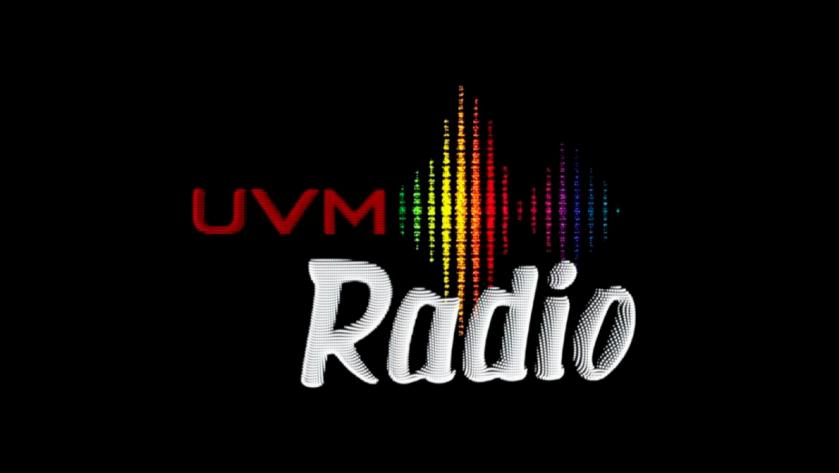

<ion-header>
  <ion-toolbar color="dark" >
    <ion-buttons slot="start">
      <ion-back-button defaultHref="/ambientelince"></ion-back-button>
    </ion-buttons>
    <div class="ban">
    <ion-title text-center>Eventos
      
    </ion-title>
  </div>
  </ion-toolbar>
</ion-header>